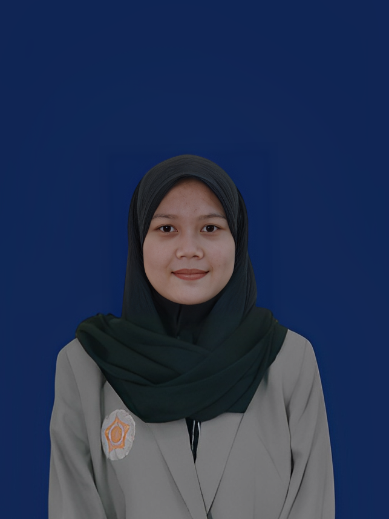

🌷
Nama: Dhea Cahya Purnama
Usia: 20 tahun
Tempat, Tanggal Lahir: Boyolali, 23 September 2004
Alamat: Jln. Sendowo C49, Sendowo, Sinduadi, Mlati, Sleman, DIY
Riwayat Pendidikan
SMA N 1 Simo Boyolali (2020-2022)
D4 Manajemen Informasi Kesehatan Universitas Gadjah Mada (2022-Sekarang)
Pengalaman PKL
RS PKU Muhammadiyah Bantul (Juni-Agustus 2023)
Puskesmas Umbulharjo 1 Yogyakarta (Januari-Februari 2024)